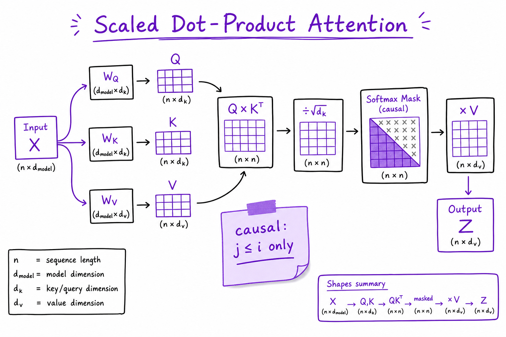

Transformers & Attention // Fundamentals
The mechanism inside every GPT-style LLM: causal self-attention lets each token attend to prior positions; multi-head attention learns parallel relational features; RoPE encodes position. Master this before RAG, agents, or serving.

Decoder-only stack: embeddings + positional encoding, repeated transformer blocks (attention + FFN), LM head outputs logits per position.
01 — What & Why
Transformers (Vaswani et al., 2017) replaced RNNs for sequence modeling with attention: each position builds a representation from a weighted mix of all other positions. Chat LLMs use decoder-only stacks with causal masking so generation never peeks at future tokens.
Functional requirements
- Map token sequence to contextual representations
- Support variable-length sequences up to context limit
- Enable parallel training across sequence positions
Non-functional
- Memory O(n²) naive attention per layer
- Compute dominated by attention + FFN matmuls at scale
Interview anchor: Attention is where the model decides what prior context matters for the current token.
01a — Core Concepts
| Term | Definition | Gotcha |
|---|---|---|
| Query / Key / Value | Linear projections of hidden state; attention weights = softmax(QK^T/√d) | Same X, different W_Q, W_K, W_V per head |
| Causal mask | Set attention to −∞ for j > i | Required for autoregressive generation |
| Multi-head | h independent attention subspaces | Head count trades expressivity vs memory |
| RoPE | Rotary position embedding on Q,K | Better length extrapolation than absolute sinusoidal |
| FFN | Two linear layers with activation (SwiGLU) | ~2/3 of transformer parameters |
| LayerNorm | Stabilize activations pre-subblock | Pre-LN vs Post-LN affects training stability |
| Residual | x + sublayer(x) enables deep stacks | 96+ layers in frontier models |
| Flash Attention | IO-aware tiled attention | Same math, less HBM traffic |
01b — API Surface
Frameworks hide attention; inspect shapes with PyTorch + Hugging Face.
from transformers import AutoModelForCausalLM
import torch
model = AutoModelForCausalLM.from_pretrained("meta-llama/Llama-3.2-1B")
inputs = model.tokenizer("Attention maps context.", return_tensors="pt")
with torch.no_grad():
out = model(**inputs, output_attentions=True)
# out.attentions: tuple of (batch, heads, seq, seq) per layer
Use output_attentions=True for interpretability demos; disable in production (memory heavy).
02 — When to Use / When NOT
| Architecture | Use when | Alternative |
|---|---|---|
| Decoder-only (GPT, Llama) | General LM, chat, code | Encoder-only for embeddings only |
| Encoder-decoder (T5) | Fixed source→target (translation) | Decoder-only + prompt formatting |
| Encoder-only (BERT) | Classification, embeddings | Not for open-ended generation |
| Sparse / linear attention | Very long context, memory bound | Standard attention + KV cache + chunking |
03 — Architecture
tokens ──► Embed + RoPE ──► [Block]×L ──► LM head ──► logits
Block: x → LN → MHA(causal) → +x → LN → FFN → +x
04 — Deep Dive: Scaled Dot-Product Attention
Attention(Q,K,V) = softmax(QK^T / sqrt(d_k) + mask) V
- Scaling prevents softmax saturation when d_k is large
- Causal mask: upper triangle −∞ before softmax
- Output at position i is weighted sum of V_j for j ≤ i
05 — Deep Dive: Multi-Head Attention
Split d_model into h heads of dimension d_k = d_model/h. Each head learns different relation types (syntax, coreference, long-range).
# Conceptual: concat(head_1,...,head_h) @ W_O
06 — Deep Dive: RoPE
Rotary embeddings multiply Q and K by position-dependent rotations in 2D subspaces. Relative position bias emerges in QK^T. Used in Llama, Mistral, Qwen.
07 — Deep Dive: Complexity
| Component | Time | Memory |
|---|---|---|
| Attention (naive) | O(n² · d) | O(n²) attention matrix if materialized |
| FFN | O(n · d²) | O(n · d) |
| KV cache (inference) | O(n) per step | O(L · n · d) per sequence |
08 — Deep Dive: Flash Attention
Tiles Q,K,V blocks in SRAM to avoid writing full n×n attention matrix to HBM. Critical for training long sequences and inference prefill at scale.

QK^T / sqrt(d_k), causal mask, softmax, multiply V.

h parallel heads, concat, output projection W_O.
09 — Production & Ops
- Disable
output_attentionsin prod - Monitor GPU memory vs context length
- Use FlashAttention-2 kernels in vLLM/TGI
- Quantization (AWQ) reduces weight memory, not KV growth
10 — Where It Shows Up
AI vertical
11 — Common Pitfalls
- O(n²) surprise — 200K context needs sparse methods or sliding window
- Confusing encoder vs decoder — BERT cannot generate
- Attention maps ≠ explanation — heads are not reliably interpretable
- Ignoring KV cache — inference cost explodes without it